9.35 Illusion Laboratory
Spring 2023 Vision Lab

Exploring the Effects of Background Gradient, Hue Opponency, and Boundary Shape on Simultaneous Contrast Perception
Simultaneous contrast is a phenomenon in which adjacent colors influence each other and alter our perception of those colors. An example of this was presented in class, where a rectangle appears lighter than another rectangle of the same shading due to their different backgrounds. Our illusion aims to address the following two questions:
- How the simultaneous contrast is affected by the:
- abruptness of the background gradient,
- hues involved and opponency,
- shape of the boundary between the background.
- How does adding a line connecting the two small rectangles affect the way we perceive them.
Illusions:
Part 1:
-
To explore the impact of the abruptness of the background gradient, we used two different gradient backgrounds. The first was a subtle gradient that started from the left edge of the left big rectangle and ended at the right edge of the right big rectangle (figure 2). The second was an abrupt gradient that started from the right edge of the left small rectangle and ended at the left edge of the small rectangle (figure 3).
Figure 1: The original illusion shown in class.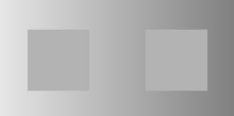
Figure 2: Background with subtle gradient
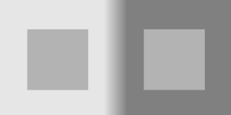
Figure 3: Background with abrupt gradient change
-
Next, we investigated the effect of using different shades of color on the illusion. We first tested whether the illusion still worked with colors other than gray (figure 4, 5).
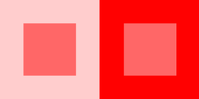
Figure 4: The illusion with shades of red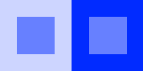
Figure 5: The illusion with shades of blue
We then tested the effect of using different colors (both opponent and non-opponent pairs) for the background and the inner squares.
Figure 6: The illusion with opponent colors (red-green & blue-yellow)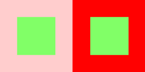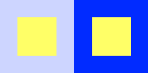Figure 7: The illusion with non-opponent colors (red-blue & blue-green)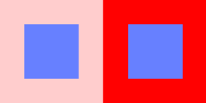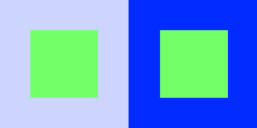 -
Then, we examined the impact of different boundary shapes on the illusion. We used three different boundaries: slight wiggle, medium wiggle, and big wiggle.
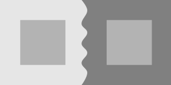
Figure 8: The illusion with small wiggly border.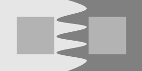
Figure 9: The illusion with medium wiggly border.
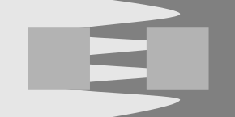
Figure 10: The illusion with big wiggly border.
Part 2:
Finally, we studied the impact of incorporating a line that connects the two inner squares. We conducted this experiment on our earlier three backgrounds with varying gradient abruptness.